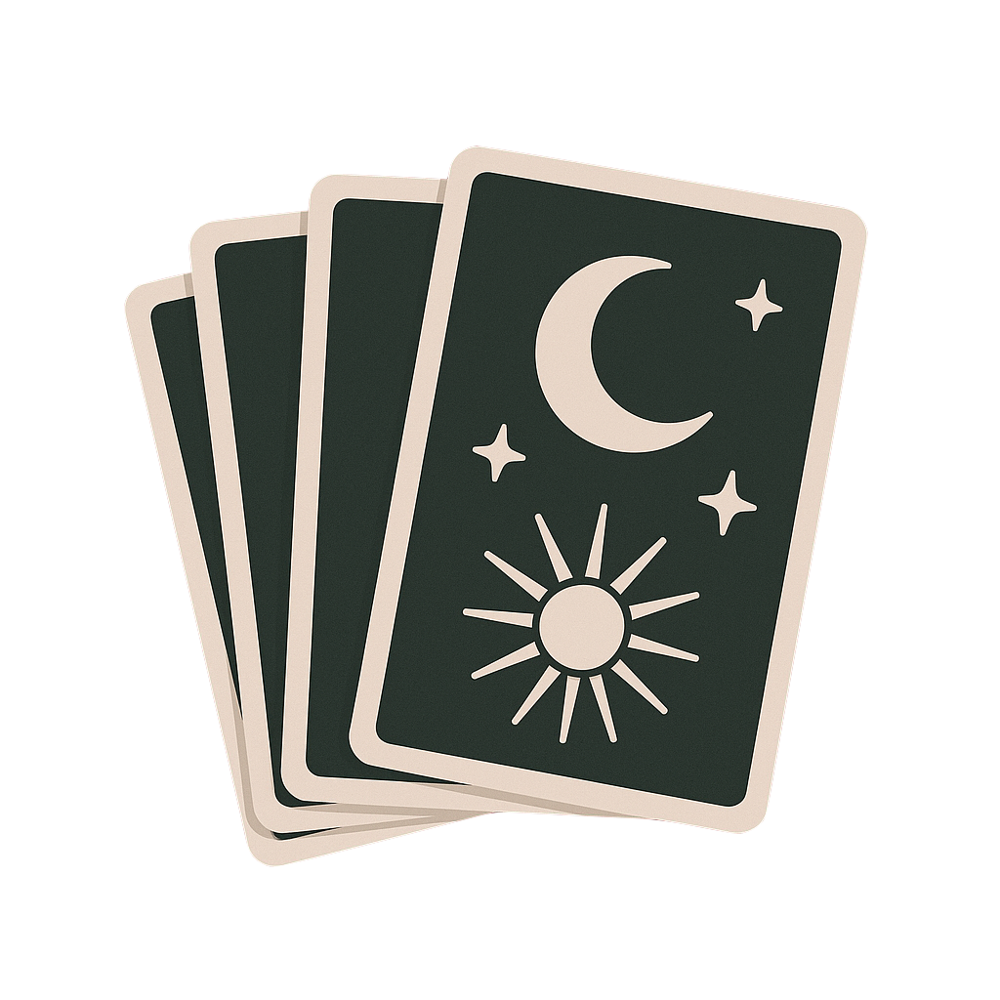

Tarot is a deck of illustrated cards used for divination, self-reflection, and storytelling. Originating in 15th-century Europe as a card game, it evolved into a tool for spiritual guidance and insight. A typical Tarot deck consists of 78 cards divided into the Major Arcana, representing significant life themes, and the Minor Arcana, which reflects everyday experiences. Readers interpret the symbolism, imagery, and positions of the cards to explore questions about the past, present, and future, helping individuals gain clarity and perspective on personal or spiritual matters.